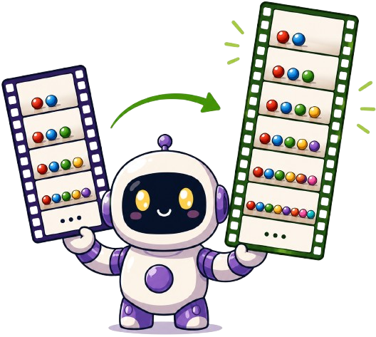
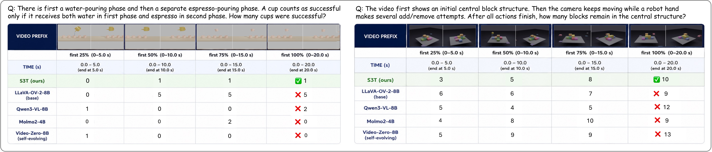
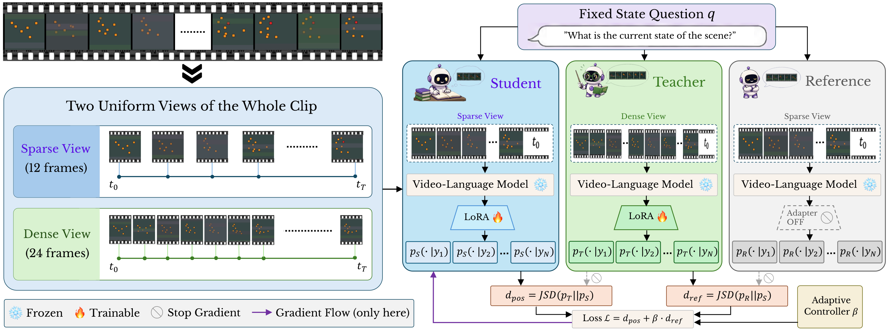
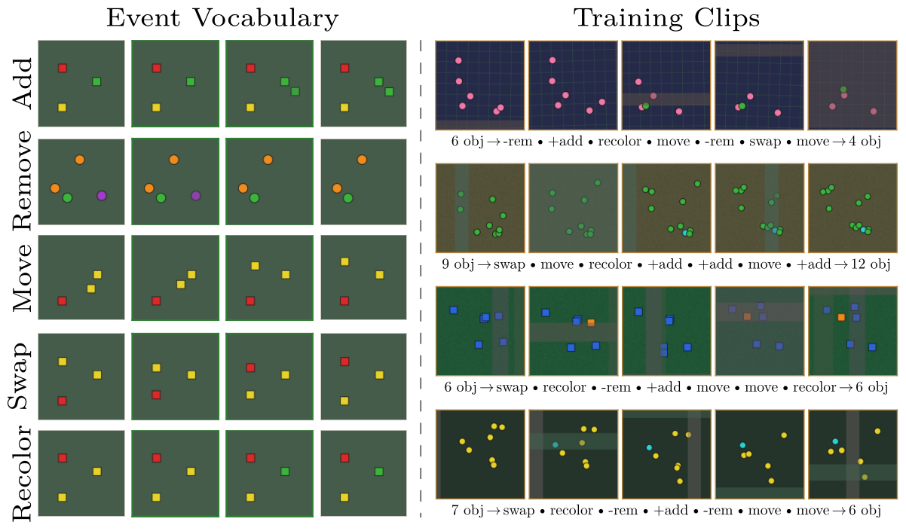
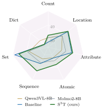
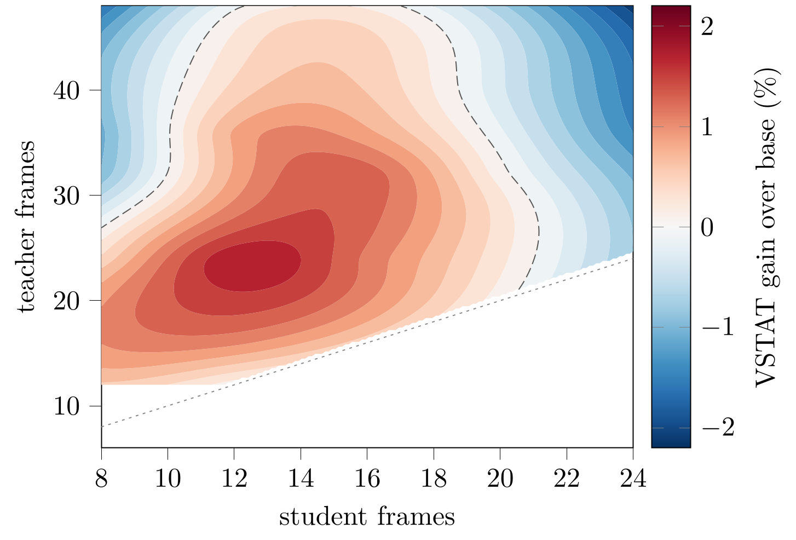
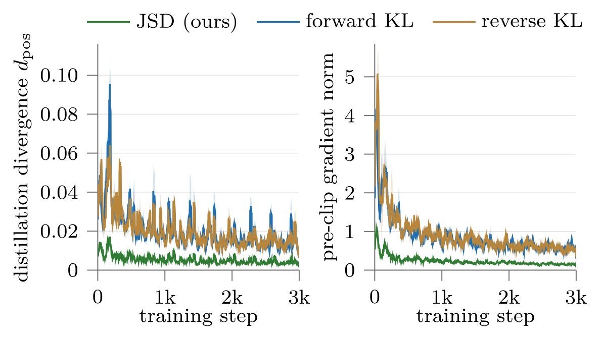

S³T · Self-Supervised Self-Distillation over Time
Temporal Self-Distillation: Learning Visual State Tracking in Videos Without Supervision
1ELLIS Institute Finland & Department of Computer Science, Aalto University, Finland
2Mohamed bin Zayed University of Artificial Intelligence, UAE
Qualitative results
Qualitative results on VSTAT
S³T answers all ten video examples correctly, while all five comparison models answer incorrectly. The final tab shows the long-prefix comparisons from the paper.
Source: VSTAT-YouTube
Question
How many different players hit the ball in total?
Reference answer: 10
| Model | Answer |
|---|---|
| S³T | 10 Correct |
| LLaVA-OV-2-8B | 8 |
| Video-Zero-8B | 2 |
| Molmo2-8B | 3 |
| Qwen3-VL-8B | 2 |
| InternVL3.5-8B | 3 |
Source: VSTAT-YouTube
Question
How many different players hit the ball in total?
Reference answer: 4
| Model | Answer |
|---|---|
| S³T | 4 Correct |
| LLaVA-OV-2-8B | 5 |
| Video-Zero-8B | 2 |
| Molmo2-8B | 3 |
| Qwen3-VL-8B | 2 |
| InternVL3.5-8B | 3 |
Source: VSTAT-YouTube
Question
How many times does the white-shirt player score?
Reference answer: 1
| Model | Answer |
|---|---|
| S³T | 1 Correct |
| LLaVA-OV-2-8B | 0 |
| Video-Zero-8B | 2 |
| Molmo2-8B | 2 |
| Qwen3-VL-8B | 2 |
| InternVL3.5-8B | 2 |
Source: VSTAT self-recorded
Question
What animal is drawn on the cup that is seventh from the bottom? (A) Monkey, (B) Lion, (C) Tiger, (D) Zebra.
Reference answer: D
| Model | Answer |
|---|---|
| S³T | D Correct |
| LLaVA-OV-2-8B | C |
| Video-Zero-8B | C |
| Molmo2-8B | C |
| Qwen3-VL-8B | C |
| InternVL3.5-8B | A |
Source: VSTAT-YouTube
Question
How many times does the blue-shirt player return the ball with a backhand?
Reference answer: 3
| Model | Answer |
|---|---|
| S³T | 3 Correct |
| LLaVA-OV-2-8B | 4 |
| Video-Zero-8B | 2 |
| Molmo2-8B | 4 |
| Qwen3-VL-8B | 2 |
| InternVL3.5-8B | 1 |
Source: VSTAT self-recorded
Question
At the end of the video, which position is the cup containing the smaller cup in? Use the viewer's perspective: (A) Right, (B) Left, (C) Center.
Reference answer: A
| Model | Answer |
|---|---|
| S³T | A Correct |
| LLaVA-OV-2-8B | C |
| Video-Zero-8B | C |
| Molmo2-8B | C |
| Qwen3-VL-8B | C |
| InternVL3.5-8B | C |
Source: VSTAT synthetic
Question
A ball starts at corner 1, the top-left. After the box is closed and tilted six times, which corner contains the ball? Corner mapping: 1 top-left, 2 top-right, 3 bottom-right, 4 bottom-left.
Reference answer: 2
| Model | Answer |
|---|---|
| S³T | 2 Correct |
| LLaVA-OV-2-8B | 4 |
| Video-Zero-8B | 4 |
| Molmo2-8B | 3 |
| Qwen3-VL-8B | 4 |
| InternVL3.5-8B | 4 |
Source: VSTAT synthetic
Question
Balls are indexed from left to right in the last frame before any release. Which ball took the longest to fall through the hole after its own release? (A) ball_3, (B) ball_1, (C) ball_2, (D) ball_6.
Reference answer: B
| Model | Answer |
|---|---|
| S³T | B Correct |
| LLaVA-OV-2-8B | A |
| Video-Zero-8B | A |
| Molmo2-8B | A |
| Qwen3-VL-8B | A |
| InternVL3.5-8B | D |
Source: VSTAT-YouTube
Question
How many dolls are there in the opened matryoshka set?
Reference answer: 8
| Model | Answer |
|---|---|
| S³T | 8 Correct |
| LLaVA-OV-2-8B | 6 |
| Video-Zero-8B | 7 |
| Molmo2-8B | 6 |
| Qwen3-VL-8B | 7 |
| InternVL3.5-8B | 6 |
Source: VSTAT-YouTube
Question
How many dolls are there in the opened matryoshka set?
Reference answer: 5
| Model | Answer |
|---|---|
| S³T | 5 Correct |
| LLaVA-OV-2-8B | 4 |
| Video-Zero-8B | 4 |
| Molmo2-8B | 4 |
| Qwen3-VL-8B | 4 |
| InternVL3.5-8B | 3 |

S³T maintains cumulative state across long prefixes in the pouring and block-manipulation examples. The comparison models drift or miscount.
Overview
Abstract
We introduce S³T, a self-contained framework for continuous state tracking in video. S³T treats temporal sampling density as privileged information. A dense view of a clip gives a more reliable estimate of running state and teaches a sparse view processed by the same frozen video-language model. The model generates its own training target, so the method needs no labels, separate teacher, or reward signal and adds no inference cost.
With LLaVA-OneVision-2-8B, S³T improves VSTAT accuracy by 2.70 points. Training uses only unlabeled synthetic clips, yet the learned capability transfers to real videos. It improves cumulative-state questions from VSTAT-YouTube by 7.95 points and MVBench Action Count by 4.50 points.
Method
Temporal self-distillation from two views of one clip

-
01
Sample the full clip twice
The student reads 12 uniformly spaced frames and the teacher reads 24. Both views cover the same temporal extent.
-
02
Score one generated answer
The sparse student greedily answers a fixed state question. Student, teacher, and reference roles score that answer token by token.
-
03
Update the student adapter
The dense teacher supplies the positive target. The adapter-disabled base model anchors the update, and gradients flow only through the student LoRA.
An adaptive controller adjusts $\beta$ to keep the reference divergence near a fixed set point.
Training data
StateGen
300 deterministic unlabeled videos · 512 x 512 · 12 FPS · approximately 16 seconds

Near-identical entities undergo add, remove, move, swap, and recolor events under occlusion and camera motion. State logs and visualization counts are not used for training.
Results
Results on VSTAT
VSTAT leaderboard
Accuracy (%) on 1,500 VSTAT questions. A dagger marks scores reproduced with our evaluation protocol.
| Method | Avg | State element | State structure | |||||
|---|---|---|---|---|---|---|---|---|
| Count | Loc. | Attr. | Atom. | Seq. | Set | Dict | ||
| Human performance | 90.5 | 92.8 | 89.9 | 86.4 | 93.7 | 77.5 | 90.0 | 92.4 |
| Open-source models | ||||||||
| LLaVA-OV-2-8B | 35.1 | 28.3 | 43.0 | 40.5 | 33.5 | 38.7 | 46.9 | 27.3 |
| LLaVA-OV-2-8B (codec) | 35.0 | 28.6 | 42.0 | 40.6 | 33.9 | 37.0 | 46.3 | 27.6 |
| Molmo2-4B | 34.4 | 31.6 | 39.7 | 34.5 | 37.1 | 33.6 | 36.7 | 27.1 |
| Cambrian-S-7B | 34.2 | 33.2 | 33.6 | 36.9 | 34.0 | 30.6 | 40.2 | 32.5 |
| Molmo2-8B | 34.0 | 30.9 | 37.0 | 37.0 | 34.7 | 36.3 | 39.1 | 27.0 |
| Qwen3VL-8B | 33.2 | 30.9 | 37.0 | 33.9 | 32.4 | 33.3 | 37.9 | 31.5 |
| InternVL3.5-2B | 31.8 | 29.6 | 33.9 | 34.1 | 31.7 | 29.9 | 36.3 | 29.9 |
| Cambrian-S-3B | 31.8 | 29.7 | 32.7 | 35.0 | 32.7 | 31.9 | 35.1 | 27.2 |
| VITA-1.5-7B | 31.5 | 25.5 | 36.3 | 38.6 | 29.4 | 33.0 | 43.1 | 26.3 |
| Qwen3VL-4B | 31.3 | 27.0 | 33.3 | 37.9 | 30.4 | 32.8 | 39.8 | 25.8 |
| InternVL3.5-8B | 30.6 | 25.1 | 33.2 | 39.2 | 26.9 | 33.8 | 41.8 | 28.3 |
| Qwen3VL-2B | 29.4 | 29.4 | 28.2 | 30.5 | 32.5 | 24.9 | 32.1 | 23.5 |
| Cambrian-S-1.5B | 29.3 | 26.0 | 34.1 | 31.0 | 28.0 | 31.0 | 31.8 | 29.3 |
| LLaVA-OV-7B | 28.6 | 20.1 | 34.8 | 39.4 | 24.5 | 30.0 | 43.8 | 25.0 |
| LLaVA-OV-0.5B | 21.3 | 14.6 | 33.9 | 21.7 | 19.7 | 25.8 | 22.2 | 20.9 |
| Self-evolving methods | ||||||||
| Qwen3-VL-4B† | 31.43 | 27.7 | 33.7 | 36.6 | 31.9 | 32.5 | 38.5 | 24.4 |
| Video-Zero-4B† | 31.63 | 27.7 | 34.5 | 36.5 | 32.1 | 32.3 | 37.8 | 25.5 |
| Qwen3-VL-8B† | 34.11 | 32.6 | 37.8 | 33.4 | 35.0 | 33.1 | 37.1 | 30.4 |
| Video-Zero-8B† | 33.89 | 32.0 | 37.2 | 34.3 | 34.1 | 35.5 | 38.3 | 29.1 |
| Qwen2.5-VL-7B† | 31.84 | 25.2 | 37.4 | 39.5 | 28.8 | 39.4 | 41.6 | 26.2 |
| EvoGround† | 32.66 | 26.7 | 36.6 | 40.6 | 29.7 | 39.5 | 42.9 | 27.0 |
| Ours | ||||||||
| LLaVA-OV-2-8B† | 34.74 | 27.7 | 42.0 | 41.4 | 32.6 | 37.0 | 48.6 | 27.4 |
| S³T (SFT teacher) | 34.45 | 26.0 | 42.2 | 43.6 | 30.9 | 38.0 | 50.9 | 27.5 |
| S³T | 36.48 | 30.4 | 41.7 | 43.3 | 35.2 | 39.4 | 47.8 | 28.8 |
| S³T (soup) | 37.12 | 32.4 | 40.7 | 43.0 | 37.2 | 41.4 | 44.9 | 28.4 |
| S³T (soup, + vision enc.) | 37.44 | 32.6 | 42.3 | 42.1 | 37.7 | 42.8 | 45.5 | 27.4 |
Our reproduced LLaVA-OV-2-8B base scores 34.74. Reported gains use this score as the reference.
Per-axis comparison

S³T improves Count, Atomic, and Sequence while preserving the remaining axes.
Temporal pretext comparison
| Training objective | Avg | Count | Dict |
|---|---|---|---|
| Base (no training) | 34.74 | 27.7 | 27.4 |
| Frame-order | 34.98 | 27.7 | 30.5 |
| Arrow-of-time | 34.75 | 27.4 | 26.5 |
| Pace | 35.45 | 29.0 | 27.1 |
| Mask-infill | 34.25 | 25.2 | 26.3 |
| S³T | 36.48 | 30.4 | 28.8 |
All methods use the same training recipe. Only the learning target changes.
Component ablations
| Setting | Overall | Count | Dict |
|---|---|---|---|
| Teacher view | |||
| Temporal stretch 12 → 24 (ours) | 36.48 | 30.4 | 28.8 |
| Temporal zoom (windowed) | 33.91 | 26.1 | 25.2 |
| Event-aware | 35.11 | 28.5 | 27.5 |
| Multi-scale {16, 32, 48} | 36.23 | 29.9 | 28.1 |
| Multi-scale {12, 24, 48} | 36.04 | 29.3 | 28.0 |
| Adaptive (router) | 36.26 | 30.9 | 27.9 |
| Adaptive (budget-controlled) | 36.49 | 30.4 | 27.7 |
| Identical 12 → 12 | 34.83 | 27.7 | 27.6 |
| Objective | |||
| JSD distillation (ours) | 36.48 | 30.4 | 28.8 |
| SFT on teacher text | 34.45 | 26.0 | 27.5 |
| JSD to generator true state | 33.90 | 27.5 | 29.2 |
| Anchor | |||
| Reference-JSD anchor (ours) | 36.48 | 30.4 | 28.8 |
| No anchor ($\beta = 0$) | 33.68 | 27.3 | 27.7 |
| Frame ratio | |||
| 12 → 24 (ours) | 36.48 | 30.4 | 28.8 |
| 12 → 36 | 35.56 | 27.6 | 27.8 |
| 12 → 48 | 34.67 | 27.1 | 27.5 |
| 8 → 32 | 33.81 | 28.6 | 26.7 |
| 24 → 48 | 32.63 | 26.5 | 27.5 |
Real-video transfer
Transfer to real videos
| Real-video benchmark | S³T (soup) | S³T (soup, + vis.) |
|---|---|---|
| VSTAT-YouTube, cumulative state | +7.35 | +7.95 |
| MVBench, Action Count | +3.00 | +4.50 |
Change in accuracy (%) from our reproduced base model.
Analysis
Teacher view and distillation objective
Student and teacher frame budgets

The gain depends on both frame budgets. The strongest region lies near a 12-frame student and a 24-frame teacher.
JSD and KL objectives

JSD keeps the moving teacher-student objective bounded and gives lower pre-clip gradient norms than forward or reverse KL.